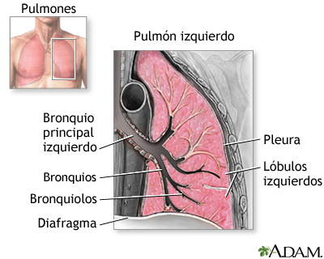

Bronquitis aguda
Es la hinchazón e inflamación del tejido los bronquios, las vías que llevan aire hacia los pulmones. Esta hinchazón estrecha las vías respiratorias, lo cual dificulta la respiración. Otro síntoma de bronquitis es tos y tos con flemas. Aguda significa que los síntomas solo han estado presentes por un período corto.

Causas
Cuando se produce la bronquitis aguda, casi siempre viene después de haber tenido un resfriado o una enfermedad seudogripal. La infección de bronquitis normalmente es causada por un virus. En primer lugar, afecta a la nariz, los senos paranasales y la garganta. Luego, se propaga a las vías respiratorias que llevan a los pulmones.
Algunas veces, las bacterias también infectan las vías respiratorias. Esto es más común en personas con enfermedad pulmonar obstructiva crónica (EPOC).
La bronquitis crónica es una afección prolongada. Para hacer el diagnóstico de bronquitis crónica, usted tiene que tener tos con flema la mayoría de los días del mes durante por lo menos 3 meses.
Síntomas
Algunos síntomas de la bronquitis aguda son:
- Molestia en el pecho
- Tos que produce flema; puede ser transparente o verde amarillento
- Fatiga
- Fiebre, usualmente baja
- Dificultad respiratoria que empeora con la actividad
- Sibilancias, en personas con asma
Incluso después de que la bronquitis aguda se haya aliviado, se puede presentar una tos seca y molesta que se prolonga de 1 a 4 semanas.
A veces, puede ser difícil saber si usted tiene neumonía o bronquitis. Si tiene neumonía, es más propenso a presentar fiebre alta y escalofríos, sentirse más enfermo o sentir mayor dificultad para respirar.
Pruebas y exámenes
Su proveedor de atención médica auscultará los ruidos respiratorios en los pulmones con un estetoscopio. Su respiración puede sonar anormal o brusca.
Los exámenes pueden ser:
- Radiografía de tórax si su proveedor sospecha neumonía
- Oximetría de pulso, un examen indoloro que ayuda a determinar la cantidad de oxígeno en la sangre mediante un dispositivo que se coloca en el extremo del dedo de la mano
Tratamiento
La mayoría de las personas NO necesitan antibióticos para la bronquitis aguda causada por un virus. La infección casi siempre desaparece por sí sola al cabo de 1 semana, aunque la tos leve puede persistir hasta por 3 semanas. Tome estas medidas para ayudar a sentirse mejor:
- Tome mucho líquido.
- Si tiene asma u otra afección pulmonar crónica, use un inhalador.
- Descanse mucho.
- Tome ácido acetilsalicílico (aspirin) o paracetamol si presenta fiebre. NO LES de ácido acetilsalicílico a las personas mayores de 18 años.
- Utilice un humidificador o vapor en el baño.
| ID | Nombre del medicamento | Descripción | Indicadores | Contraindicaciones |
|---|---|---|---|---|
| 1 | Broncodilatadores | Relajan los músculos de las vías respiratorias. | Alivio de la tos y dificultad respiratoria. | Hipersensibilidad a componentes. |
| 2 | Antiinflamatorios no esteroides (AINEs) | Reducen la inflamación y alivian el dolor. | Tratamiento del malestar y fiebre. | Úlceras gástricas, insuficiencia renal. |
| 3 | Antibióticos | Tratamiento de infecciones bacterianas asociadas. | Bronquitis bacteriana. | Alergias a penicilinas, enfermedades hepáticas. |
| 4 | Expectorantes | Ayudan a eliminar el moco de las vías respiratorias. | Facilitan la expectoración en casos de mucosidad. | Afecciones pulmonares severas. |
| 5 | Antitusígenos | Suprimen la tos irritativa. | Tos seca y persistente. | Tos productiva, enfermedad respiratoria crónica. |
Otros consejos:
- NO fumar.
- Evitar el tabaquismo pasivo y la contaminación del aire.
- Lavarse las manos (y lavarles las manos a los niños) con frecuencia para evitar propagar virus y otros microbios.
Expectativas (pronóstico)
Excepto por la tos, los síntomas generalmente desaparecen en un período de 7 a 10 días si no tiene un trastorno pulmonar. La tos suele durar de 2 a 3 semanas.